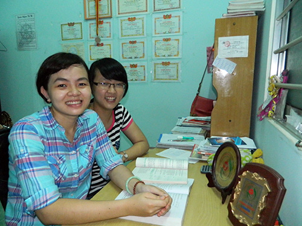

Chị em Hiền - Hòa

Viết bởi Lê Quân Thứ sáu, 23 Tháng 8 2013 09:40
Tiếp tục lần thứ 2 nhận Giải thưởng Ươm mầm tài năng đất Quảng, Trần Thị Diệu Hòa (học sinh lớp 12 chuyên Sinh, trường THPT Chuyên Nguyễn Bỉnh Khiêm) khiêm tốn khi cho rằng, mình cần nhiều thời gian nữa mới vươn đến mục tiêu đặt ra.

Chị em Diệu Hiền - Diệu Hòa
Hai “hạt mầm”
Hai chị em Diệu Hòa - Diệu Hiền đã là cái tên quen thuộc với giải thưởng Ươm mầm tài năng đất Quảng. Năm 2011, Diệu Hiền, chị gái Hòa đã được xướng tên cùng “bảng vàng” thành tích tại Lễ trao giải của Quỹ ươm mầm tài năng do Báo Quảng Nam tổ chức. Năm 2012, Diệu Hòa lại tiếp nối bước chân chị. Và năm nay, với thành tích cũ cùng “chiến công” mới, em lập cú đúp khi lần nữa được trao thưởng. Hòa chia sẻ niềm vui: “Em rất bất ngờ khi biết tin. Nhận được giải thưởng vào ngày đầu năm học cuối cấp như một động lực tiếp sức cho đường đua vào đại học của em”. Diệu Hiền, chị gái Hòa cũng vui lây với niềm vui của em gái. “Giải thưởng của Quỹ ươm mầm tài năng đất Quảng đã trợ sức cho hai chị em rất nhiều; vừa về kinh tế vừa là động lực tinh thần để tụi em cố gắng nhiều hơn” - Diệu Hiền nói. Cô gái này cũng vừa tốt nghiệp loại Giỏi khoa Kế toán trường Đại học Quảng Nam.
Để có thể “thuyết phục” được hội đồng xét giải thưởng, bảng thành tích của Trần Thị Diệu Hòa khá dày dặn. Liên tục là học sinh giỏi các năm, Hòa còn có huy chương Đồng môn Sinh học tại cuộc thi truyền thống Olympic 30.4 dành cho các tỉnh Nam Trung Bộ vào cuối năm lớp 10. Bước vào lớp 11, cô gái có duyên với giải thưởng này lại tiếp tục ẵm thêm giải Khuyến khích môn Sinh tại Kỳ thi học sinh giỏi các tỉnh miền Bắc vừa tổ chức tại Hải Phòng. Đam mê kỳ lạ với môn Sinh học, mong muốn khám phá, giải mã những bí ẩn của cuộc sống động - thực vật quanh mình, điều này đã thôi thúc Diệu Hòa không ngừng tìm tòi, học hỏi. Và không chỉ có vậy. Nỗi đau đáu với căn bệnh liệt nửa người của ba cứ thúc giục cô bé phải học hành nhiều hơn, giỏi hơn. Năm học này, Trần Thị Diệu Hòa bận rộn hơn với những mục tiêu và kỳ vọng mọi người đặt trên vai em. “Em vẫn nuôi hy vọng đậu vào trường Đại học Y Huế, trở thành một bác sĩ giỏi để đầu tiên là giúp ba mẹ thoát khỏi phần nào những căn bệnh đang hành hạ”- Hòa chia sẻ.
Như hạt mầm được ươm lên trong vườn xanh đất Quảng, dù nuôi trong mình nhiều dự định, mục tiêu và ở trong một hoàn cảnh khó khăn, nhưng nụ cười vẫn thường trực trên khuôn mặt chị em Hiền - Hòa. Với các em, dù ở bất cứ điều kiện nào, tự tạo lấy niềm vui và sự lạc quan là cách để vươn đến thành công. Đó cũng là cách Hiền - Hòa tự cân bằng cuộc sống để nuôi dưỡng niềm đam mê và cảm hứng học tập của mình.
Vun trồng mơ ước
Hiền và Hòa đều tự ví mình như những “hạt mầm nhỏ, rồi sẽ lớn dần theo từng ngày”. Nhưng muốn nảy thành cây tươi xanh cần hội tụ nhiều điều kiện, và sự trợ lực của xã hội với hoàn cảnh hai em chính là điều kiện tự nhiên tốt nhất nuôi cây lên xanh. Ba năm liền, Giải thưởng Ươm mầm tài năng đất Quảng luôn có tên một trong hai em. Diệu Hòa nói rằng, em biết trong danh sách hồ sơ tham gia giải thưởng có rất nhiều bạn xuất sắc, và phần thưởng này giống như một sự tiếp sức trước những khó khăn của em. Đó là điều quý giá nhất thể hiện sự quan tâm của cộng đồng và mọi người dành cho con đường các em đang đi. Và đúng như mục đích cuối cùng Quỹ Ươm mầm tài năng đất Quảng: Tiếp sức cho những tài năng, những ước mơ!
Hành trình đạt đến mơ ước của Diệu Hòa còn khá dài, trong khi Diệu Hiền – chị gái em đã chạm đích bằng tấm bằng loại ưu và nhiều thành tích khác trong giảng đường đại học. Dù vẫn muốn tiếp tục học lên nữa, nhưng Diệu Hiền phải để dành điều ước đó sang một bên, tìm kiếm việc làm và tiếp tục cùng mẹ vun trồng đam mê cho em gái Diệu Hòa đang nỗ lực từng ngày để chinh phục mục tiêu mới. “Năm học cuối cấp em sẽ phải cố gắng nhiều hơn nữa mới có thể vào Đại học Y như đã đặt ra. Trước hết em đang tập trung vào các môn thuộc nhóm khối A, B (Toán, Lý, Hóa, Sinh) để có được điểm thi đại học tốt nhất. Em vẫn sẽ đầu tư vào Kỳ thi Học sinh giỏi Quốc gia, nhưng em xem đây là sân chơi để mình ôn luyện lại kiến thức thôi. Vẫn phải đặt mục tiêu đại học lên hàng đầu”- Diệu Hòa chia sẻ.
Đầu năm học này, tin vui nữa đến với Diệu Hòa khi em được chọn là Đối tượng học lớp cảm tình Đảng. Mong rằng như một sự lan tỏa về tinh thần, Giải thưởng Ươm mầm tài năng đất Quảng sẽ tiếp thêm nhiều điều kiện tự nhiên tốt nhất để cùng với sức bật và bản lĩnh của bản thân, những hạt mầm như Diệu Hòa sẽ nảy lên cây tươi xanh.
(Theo Baoquangnam.com.vn )
itnbk.edu.vn
- 04/09/2013 06:53 - Phan Thế Hoàng - gương mặt tài năng
- 28/08/2013 09:52 - Những thầy thuốc tương lai
- 27/08/2013 13:27 - Chinh phục đam mê
- 26/08/2013 15:10 - 45 mô hình, sản phẩm đạt giải Cuộc thi sáng tạo th…
- 23/08/2013 14:23 - Nữ sinh xứ Quảng vinh danh tại ĐH Harvard
- itnbk.edu.vn
- 23/08/2013 09:33 - Cho những ngày sau
- 17/04/2013 09:21 - Thủ lĩnh trẻ tương lai
- 27/02/2013 08:03 - Tăng cường các biện pháp chống tiêu cực trong Kì t…
- 19/02/2013 07:56 - Lưu ý khi ghi hồ sơ ĐKDT vào ĐH, CĐ 2013
- 18/02/2013 08:20 - Giáo dục đạo đức HSSV bằng môi trường văn hóa